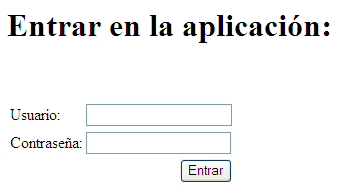

Introducción a Struts 2
Con el paso de los años, Struts se ha convertido en EL framework MVC para JavaEE por excelencia. No obstante, también se ha quedado un poco anticuado. Nacido en otra época, el diseño original de Struts no respeta principios que hoy se consideran básicos en JavaEE, como el uso de APIs "no invasivos" que minimicen las dependencias en nuestro código de los APIs del framework, o la facilidad para hacer pruebas unitarias.
Struts 2 es la "siguiente generación" de Struts, diseñado desde el comienzo con estos principios básicos en mente. Vamos a ver en esta sesión una introducción rápida a las ideas fundamentales de la versión 2. Dadas las limitaciones de tiempo y espacio, y la suposición previa de que se conoce Struts 1.x, comenzaremos por los cambios fundamentales introducidos en la versión 2 con respecto a la 1.x, seguida de una breve introducción a ciertas ideas (interceptores, value stack, etc), que aun siendo básicas en Struts 2 no existían en la versión 1.x. Para abordar Struts 2 partiendo de cero seguiríamos un orden distinto en la introducción de conceptos.
Configuración
Lo primero es copiar los JARs de Struts 2 en nuestro proyecto. En la web del framework se incluye una plantilla de ejemplo con los JARs necesarios. Como mínimo necesitaremos las versiones correspondientes de struts-core, xwork, ognl, freemarker y commons-logging.
Al igual que en Struts 1.x debemos hacer que todas las peticiones se redirijan al servlet que hace de controlador. En el web.xml de la aplicación haremos:
<filter> <filter-name>struts2</filter-name> <filter-class>org.apache.struts2.dispatcher.FilterDispatcher</filter-class> </filter> <filter-mapping> <filter-name>struts2</filter-name> <url-pattern>/*</url-pattern> </filter-mapping>
Nótese que en Struts 2 el mapeo de las peticiones se hace con un filtro de servlets en lugar de con un servlet-mapping.
El fichero de configuración XML cambia de formato, haciéndose más conciso. Además, por defecto pasa a llamarse struts.xml en lugar de struts-config.xml y a residir en el CLASSPATH en lugar de en WEB-INF. Su estructura básica es:
<!DOCTYPE struts PUBLIC
"-//Apache Software Foundation//DTD Struts Configuration 2.0//EN"
"http://struts.apache.org/dtds/struts-2.0.dtd">
<struts>
<package name="default" extends="struts-default">
<action ...>
<result>...</result>
</action>
...
</package>
</struts>
Donde cada package define un conjunto de acciones, heredando su configuración de algún otro package. En todos los ejemplos usaremos el struts-default, que se define en la distribución estándar, e incluye una serie de elementos básicos para el trabajo con el framework.
Siguiendo las "tendencias" actuales en JavaEE, el fichero de configuración puede ser sustituido casi totalmente por el uso de anotaciones, aunque dadas las limitaciones de tiempo y espacio de la sesión aquí usaremos el XML, por ser la forma más similar a Struts 1.x.
De Struts 1.x a Struts 2
Veamos de forma rápida cómo han cambiado en la versión 2 los principales componentes de una aplicación Struts: acciones, actionforms y taglibs.
Acciones
El código de una acción de Struts 1.x tiene fuertes dependencias del API de Struts y del API de servlets. Recordemos el primer ejemplo de acción que vimos en la sesión 1, donde se destacan en negrita las dependencias:
package acciones;
import javax.servlet.http.*;
import org.apache.struts.action.*;
public class AccionLogin extends Action
public ActionForward execute(ActionMapping mapping, ActionForm form,
HttpServletRequest request, HttpServletResponse response)
throws Exception {
boolean usuarioOK;
//obtener login y password y autentificar al usuario
//si es correcto, poner usuarioOK a 'true'
...
//dirigirnos a la vista adecuada según el resultado
if (usuarioOK)
return mapping.findForward("OK");
else
return mapping.findForward("errorUsuario");
}
}
Estas dependencias son una "molestia" a la hora de hacer pruebas unitarias. Para probar nuestra acción necesitamos tener Struts y el contenedor de servlets en marcha. Además dificultan la portabilidad de nuestro código a otro framework MVC distinto de Struts.
La tendencia actual en JavaEE es el uso de APIs "no invasivos", que no necesitan de dependencias explícitas en el código. Siguiendo esta filosofía, en Struts 2 una acción es una clase java convencional, que no es necesario que herede de ninguna clase especial:
package acciones;
public class AccionLogin {
public String execute() {
boolean usuarioOK;
//obtener login y password y autentificar al usuario
//si es correcto, poner usuarioOK a 'true'
...
//dirigirnos a la vista adecuada según el resultado
if (usuarioOK)
return "OK";
else
return "errorUsuario";
}
}
Nótese que las dependencias de APIs externos al código se han reducido a cero (luego veremos cómo obtener los parámetros HTTP y otra información de contexto). Así, nuestra acción se puede probar fácilmente y portarla a otro framework MVC es también mucho más sencillo.
Por supuesto, sigue siendo necesario mapear una determinada URL con la acción y asociar los resultados con la vista a mostrar. Esto se hace en el struts.xml (o de manera alternativa con anotaciones):
<!DOCTYPE struts PUBLIC
"-//Apache Software Foundation//DTD Struts Configuration 2.0//EN"
"http://struts.apache.org/dtds/struts-2.0.dtd">
<struts>
<package name="default" extends="struts-default">
<action name="login" class="acciones.AccionLogin">
<result name="OK">/usuario.jsp</result>
<result name="errorUsuario">/error.jsp</result>
</action>
</package>
</struts>
Por defecto, la acción se asocia con una URL igual a su name seguida del sufijo ".action". En este caso "login.action" sería la que dispara la acción.
Por conveniencia Struts 2 ofrece una clase llamada ActionSupport de la que pueden heredar nuestras acciones. Una de las ventajas de usar ActionSupport es disponer de una serie de constantes predefinidas con posibles resultados de la acción, en lugar de usar Strings arbitrarios como en el ejemplo anterior.
package acciones;
import com.opensymphony.xwork2.ActionSupport;
public class AccionLogin extends ActionSupport {
@Override
public String execute() throws Exception {
boolean usuarioOK;
//obtener login y password y autentificar al usuario
//si es correcto, poner usuarioOK a 'true'
...
//dirigirnos a la vista adecuada según el resultado
if (usuarioOK)
return SUCCESS;
else
return ERROR;
}
}
El ocaso de los ActionForms
Los ActionForms son uno de los puntos más débiles de Struts 1.x, presentando una serie de problemas:
- Dependencia del API de Struts, ya que deben heredar de clases propias del framework
- Como los campos deben poder acomodar datos de tipo incorrecto, al final todos acaban siendo de
tipo String. Esto implica que no podemos usar los ActionForms como objetos de negocio, llevando a:
- La multiplicación del número de clases necesarias
- La necesidad de convertir los valores al tipo apropiado
- La necesidad de copiar los valores al objeto de negocio
Aunque librerías como BeanUtils alivian en parte los dos últimos problemas, es evidente que sería mejor que todo estuviera integrado en el propio framework antes que tener que usar herramientas adicionales.
Por todo ello, en Struts 2 se ha tomado la decisión de eliminar los ActionForms como tales. Por supuesto, las acciones seguirán necesitando acceso a beans Java para hacer su trabajo, pero serán clases java convencionales sin ningún requisito especial. Veamos cómo podría obtener la acción de login los datos necesarios para comprobar usuario/contraseña. Antes que nada, necesitamos un bean para almacenarlos
package modelo;
public class Usuario {
private String login;
private String password;
public String getLogin() {
return login;
}
public void setLogin(String login) {
this.login = login;
}
public String getPassword() {
return password;
}
public void setPassword(String password) {
this.password = password;
}
}
Nótese que la clase anterior es un JavaBean convencional que no depende del API de Struts.
Ahora la acción recibirá el bean mediante inyección de dependencias. Esta es una filosofía de trabajo muy habitual actualmente en JavaEE en la que se asume que alguien externo (Struts en este caso) le pasará a nuestro código el/los objetos necesarios para hacer su trabajo. En nuestra acción estamos asumiendo que antes de llamar a execute, Struts habrá instanciado la variable usuario llamando al método setUsuario.
package acciones;
import modelo.Usuario;
public class LoginAccion {
private Usuario usuario;
public Usuario getUsuario() {
return usuario;
}
public void setUsuario(Usuario usuario) {
this.usuario = usuario;
}
public String execute() {
String login = usuario.getLogin();
...
}
}
Nótese la diferencia fundamental con Struts 1.x: en éste, el bean (ActionForm) se recibía como un parámetro del execute. En Struts 2 se recibe a través del setter.
Todo esto está muy bien, pero ¿de dónde salen los datos del objeto Usuario?. Resulta que si usamos las taglibs de Struts 2 para nuestros JSP, sus valores se rellenarán automáticamente, igual que pasaba con los ActionForms en Struts 1.x.
Taglibs
Al igual que Struts 1.x, la versión 2 incluye varias taglibs propias. Además de haberse mejorado, sobre todo se ha simplificado su uso. Por ejemplo, supongamos que queremos generar el siguiente formulario y asociar sus campos a un bean de tipo usuario. Además queremos mostrar los errores de validación, si los hay

Podemos hacerlo con el siguiente HTML
<%@taglib prefix="s2" uri="/struts-tags" %>
<html>
<head>
<title>Ejemplo de taglib HTML en Struts 2</title>
</head>
<body>
Entrar en la aplicación:<br/>
<s2:form action="login">
<s2:textfield label="usuario" name="usuario.login"/>
<s2:password label="contraseña" name="usuario.password"/>
<s2:submit value="login"/>
</s2:form>
</body>
</html>
A partir del ejemplo, podemos ver que ha habido varios cambios con respecto a Struts 1.x:
- Algunas etiquetas han cambiado: por ejemplo, textfield era text en Struts 1.x
- Los campos de formulario generan también un rótulo con texto precediéndolos ("Usuario" y "Contraseña"). En Struts 1.x había que ponerlos manualmente. Tampoco hay que formatear explícitamente los campos para que aparezcan uno debajo del otro.
- Podemos asociar un campo a una propiedad de un bean sin más que poner nombre_bean.nombre_propiedad. Las taglibs de Struts 2 usan un lenguaje de expresiones similar al EL de JSP denominado OGNL.
- No es necesario poner etiquetas para mostrar los errores de forma explícita. Si activamos la validación (veremos posteriormente cómo hacerlo), al lado de cada campo aparecerá el mensaje de error correspondiente.
Como vemos, la cantidad de HTML introducida por las etiquetas de Struts 2 es sensiblemente superior a la de sus equivalentes en 1.x. Este HTML es configurable , ya que Struts 2 usa plantillas predefinidas de freemarker para generarlo, que podemos cambiar por otras o adaptar a nuestras necesidades.
Internacionalización
Al igual que las tags de Struts 1.x, las de Struts 2 soportan internacionalización. Los mensajes se sacan también de ficheros .properties. En nuestro ejemplo usaremos el fichero "global" de .properties, cuyo nombre se define en el archivo struts.properties, en la raíz del CLASSPATH. Recordar que en struts 1.x este fichero se definía en el XML de configuración con la etiqueta message-resources. Nuestro struts.properties contendría una línea con:
struts.custom.i18n.resources=mensajes
Definiendo por tanto mensajes.properties, en la raíz del CLASSPATH, como nuestro fichero de mensajes. Para aumentar la modularidad, Struts 2 permite definir ficheros de mensajes propios de una acción o globales solo a un package java (entre otras opciones), aunque no veremos aquí como definirlos.
Nuestro mensajes_es.properties, para idioma español, podría contener:
loginTitle=Entrar en la aplicación login=Usuario password=Contraseña enter=Entrar
Habría que cambiar las tags de Struts para que hagan uso del fichero de mensajes
<%@taglib prefix="s2" uri="/struts-tags" %>
<html>
<head>
<title>Ejemplo de taglib HTML en Struts 2</title>
</head>
<body>
<s2:label key="loginTitle"/>
<s2:form action="login">
<s2:textfield key="login" name="usuario.login"/>
<s2:password key="password" name="usuario.password"/>
<s2:submit key="enter"/>
</s2:form>
</body>
</html>
Validación
Struts 2 también permite validación declarativa, aunque ya no usa el commons validator. De este modo se puede usar una sintaxis más concisa y adaptada a las necesidades del framework.
La práctica recomendada en Struts 2 es definir la validación de cada acción en un XML separado. Por convención el fichero debe tener el mismo nombre que la clase que define la acción, con el sufijo -validation. Es decir, para la clase LoginAccion debe ser LoginAccion-validation.xml, en el mismo paquete java que la clase de la acción. Veamos un ejemplo, suponiendo que queremos que login sea obligatorio
<!DOCTYPE validators PUBLIC
"-//OpenSymphony Group//XWork Validator 1.0.2//EN"
"http://www.opensymphony.com/xwork/xwork-validator-1.0.2.dtd">
<validators>
<field name="usuario.login">
<field-validator type="requiredstring">
<message>Login no puede estar vacío</message>
</field-validator>
</field>
</validators>
Como se ve, la sintaxis se simplifica bastante con respecto a Struts 1.x. Aunque en el ejemplo el mensaje de error está fijo en el XML, para simplificar, por supuesto se puede externalizar a un properties.
Para que nuestra acción soporte validación, debe implementar el interfaz ValidationAware. Dicho interfaz define varios métodos, para gestionar los errores producidos. Afortunadamente no es necesario implementarlos si nuestra acción hereda de ActionSupport.
En el XML de configuración un error de validación se asocia con un resultado "input" (por "herencia" de la palabra clave usada en Struts 1.x). Así, el action del struts.xml quedaría:
<action name="login" class="es.ua.jtech.struts2.prueba.acciones.LoginAccion"> <result name="ok">/usuario.jsp</result> <result name="input">/index.jsp</result> </action>
En ActionSupport se define la constante INPUT con el valor "input", de modo que en el código java de la acción haríamos un return INPUT si tuviéramos que validar alguna condición manualmente en el execute() de la acción.
Conceptos nuevos en Struts 2
Por lo visto en los apartados anteriores puede dar la impresión de que, aunque Struts se ha mejorado y simplificado su uso, sigue siendo el mismo framework "por dentro". Nada más lejos de la realidad, su arquitectura y funcionamiento interno han cambiado completamente. De ahí que haya conceptos totalmente nuevos que no tienen equivalencia en la versión 1. Veremos aquí muy brevemente algunos de ellos
Interceptores
Los interceptores son elementos que interceptan la petición antes de que se ejecute la acción de destino. De este modo se pueden realizar tareas sin tener que modificar el código de la acción. Podemos decir que desempeñan un papel muy similar al de los filtros de servlets pero con relación a las acciones. La configuración por defecto de Struts incluye una pila completa de interceptores activos para todas las peticiones. De hecho, la inyección de dependencias que veíamos en el ejemplo de acción es responsabilidad de un interceptor. Y también la validación de campos, entre otras muchas tareas.
Pese a su importancia, es raro que el desarrollador de Struts tenga que "vérselas" directamente con los interceptores. Como mucho, tendremos que hacer que nuestras acciones implementen algún interfaz o hereden de alguna clase para interactuar con el interceptor. De hecho, recordemos que para la validación debíamos implementar el interfaz ValidationAware (o heredar de ActionSupport).
OGNL y value stack
El value stack, como su nombre sugiere, es una pila donde se colocan objetos a los que podemos necesitar acceso en un momento dado. Struts coloca en esta pila, entre otros, la acción a ejecutar y los ámbitos de aplicación, sesión, petición,...
OGNL es un lenguaje de expresiones que se usa para referenciar elementos en esta pila. Su sintaxis es similar a la del EL de JSP, aunque bastante más potente. En una aplicación Struts, es en las tags propias del framework donde se usa habitualmente OGNL. Cuando en un ejemplo anterior poníamos la expresión OGNL usuario.login, la estábamos buscando en la pila de valores. Como hemos dicho, la acción se coloca automáticamente en esta pila. OGNL nos permite ir navegando por objetos relacionados entre sí (de hecho significa Object Graph Navigation Language). De este modo podemos acceder a la propiedad usuario de la acción y dentro de ella a la propiedad login. Al igual que en EL, cuando ponemos objeto.propiedad, se asume que accedemos a ésta a través de métodos get/set.